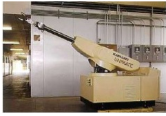

Robotics

What are Robots?
Robots are multifunctional, re-programmable, automatic industrial machine designed for replacing human in hazardous work.
Robotics is a branch of Artificial Intelligence (AI), it is mainly composed of electrical engineering, mechanical engineering and computer science engineering for construction, designing and application of robots.
Robotics is science of building or designing an application of robots. The aim of robotics is to design an efficient robot.
Aspects of Robotics
- The robots have electrical components for providing power and control the machinery.
- They have mechanical construction, shape, or form designed to accomplish a particular task.
- It contains some type of computer program that determines what, when and how a robot does something.
Robotics History
First use of the word "Robotics":
The word robot was firstly introduced to public by Czech writer Karel Capek in his play Rossum's Universal Robots (R.U.R), published in 1920. The play begins with a factory that makes artificial people known as robots.
The word "Robotics", was coined accidentally by the Russian-born, American scientist, Issac Asimov in 1940s.
The three laws of Robotics:
Issac Asimov also proposed his three "Laws of Robotics", and he later added a "zeroth law"
- Zeroth Law - A robot is not allowed to injured humanity, or, through inaction it allows humanity to come to harm.
- First Law - A robot can not injure a human being, or, through inaction it allows a human being to come to harm, unless it would violate the higher order law.
- Second Law - A robot should follow the orders given it by human beings, except when such orders give by humans would conflict with a higher order law.
- Third Law - A robot is allowed to protect its own existence as long as such protection would not conflict with a higher order law.
The first industrial robot: UNIMATE
In 1954 first programmable robot is designed by George Devol, who coins the term Universal Automation. He later shortens this term to Unimation, which become the name of the first robot company in 1962.